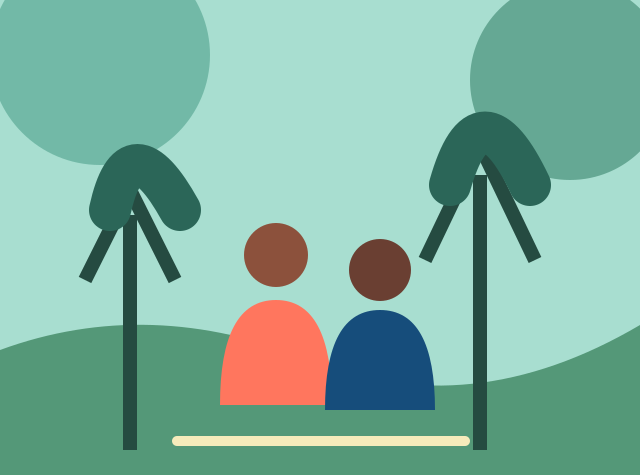

Aprendizaje situado
Trabajá sobre desafíos concretos desde el primer cuatrimestre.
NUEVA LICENCIATURA · 2026
Estudiá Innovación Social: una formación para comprender, diseñar y liderar respuestas a los desafíos de nuestras comunidades.

de formación
práctica aplicada
proyectos reales
UNA EXPERIENCIA DIFERENTE
Aprendé haciendo, junto a organizaciones, investigadores y personas que comparten tu curiosidad.
Trabajá sobre desafíos concretos desde el primer cuatrimestre.
Construí redes con docentes, pares y referentes del territorio.
Transformá buenas ideas en proyectos sostenibles y evaluables.
TU PRÓXIMO PASO
La próxima charla informativa es el 18 de agosto. Conocé al equipo, despejá tus dudas y recorré el campus.
Quiero recibir información